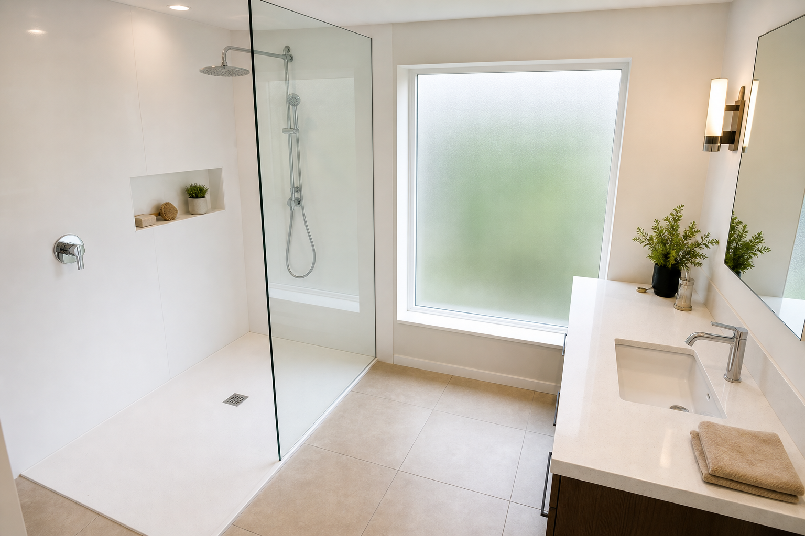

Modern Walk-In Shower Ideas Using Seamless Panels
A modern walk in shower can anchor an entire bathroom remodel. When homeowners search for seamless shower panels, they are usually trying to achieve a bright, minimalist look with fewer grout lines and an open footprint. This article focuses on practical layout ideas that still perform well in real life, not just in photos. Walk-in shower installers near you can validate slope, glass, and drain details against your actual space.
The “open shower†layout: what it really requires
Open walk-in showers look effortless, but the best versions are intentional about where water goes. If you want a large entry, you typically need confidence in floor slope, drain capacity, and showerhead placement—often with a bathroom remodeling contractor who has built similar layouts in your market.
If you are remodeling a smaller bathroom, consider whether a slightly smaller opening still gives you the “airy†feel without daily splash frustration.
Glass options that keep the room feeling large
Frameless glass is a common choice for modern remodels because it preserves sightlines. The tradeoff is careful hardware selection and realistic expectations about water escape with certain showerhead setups.
- Fixed panel: great for minimal hardware and a clean look.
- Door + panel: can improve splash control when space allows.
- Glass height: taller glass can help, but layout and pressure matter too.
Drainage details people forget
Linear drains can look sleek, but the overall system still needs correct waterproofing and planning. Center drains can be simpler in some layouts. The “right†choice is the one that matches your floor structure, tile or panel system, and accessibility goals.
Fixture packages that match modern minimalism
Chrome and brushed nickel remain popular because they read clean against white and beige palettes. Many homeowners pair a rain showerhead with a handheld for flexibility, especially in households with kids, pets, or mobility considerations.
Cleaning and ventilation habits that protect finishes
Even with seamless panels, bathrooms need airflow. A ventilation plan that matches shower size and household usage helps prevent moisture issues over time. For glass, ask your installer about recommended cleaning products so you do not damage coatings.
FAQ
Is a single glass panel enough to contain water?
Sometimes. Spray patterns, slope, and layout matter, so plan with a bathroom remodel professional.
Do seamless panels mean zero maintenance?
No. They can reduce grout work, but cleaning and ventilation still matter.